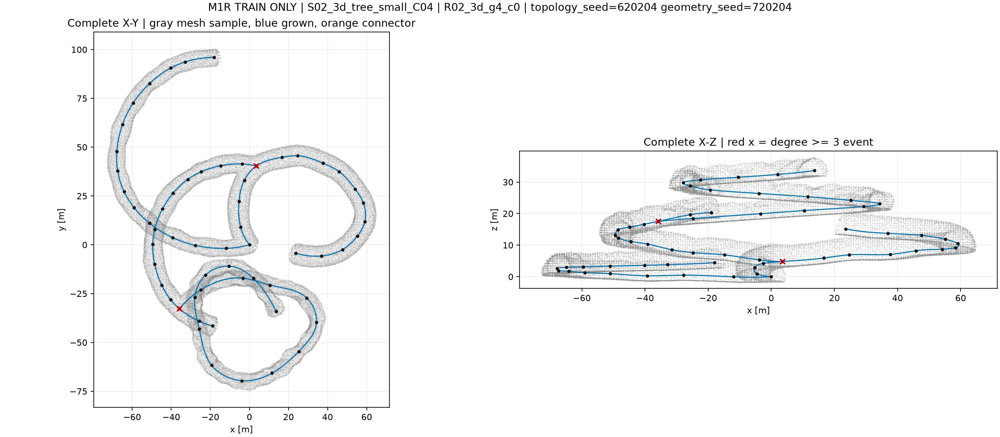
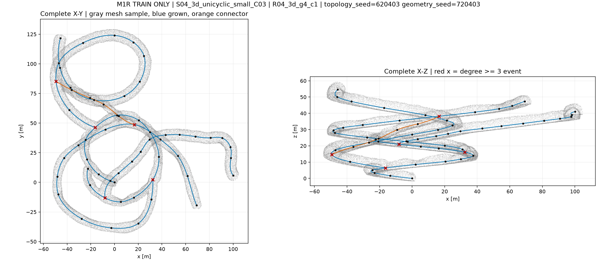
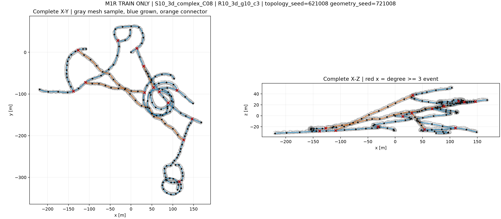
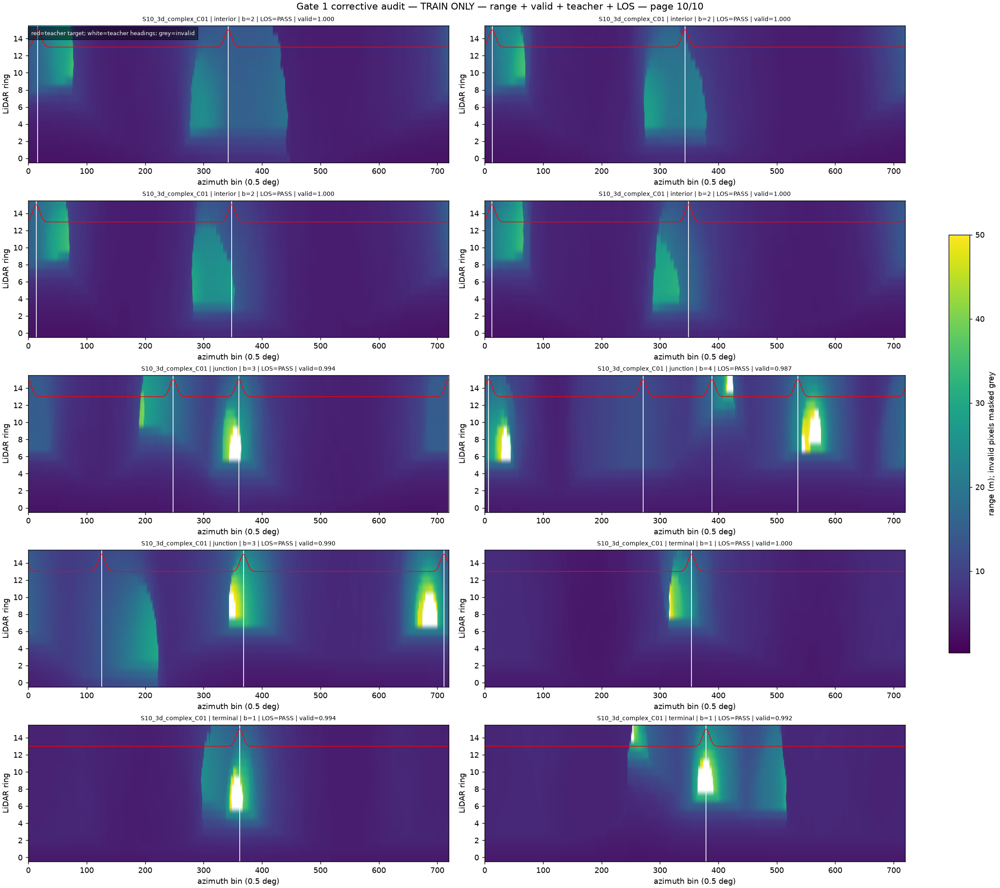
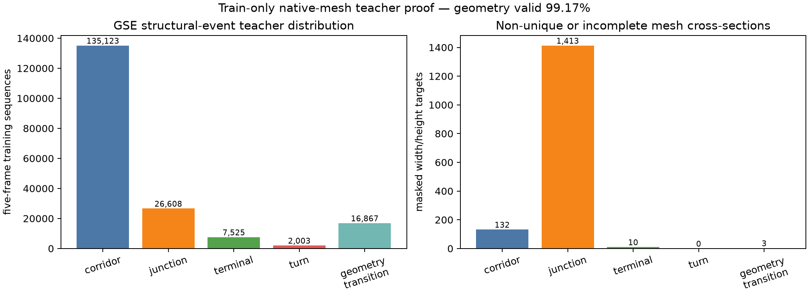
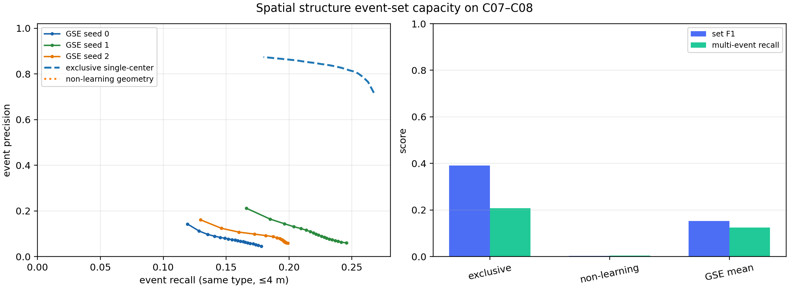
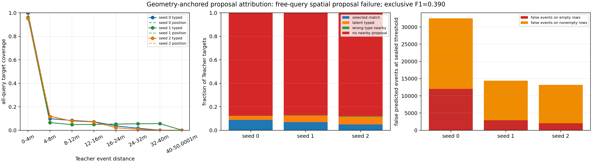
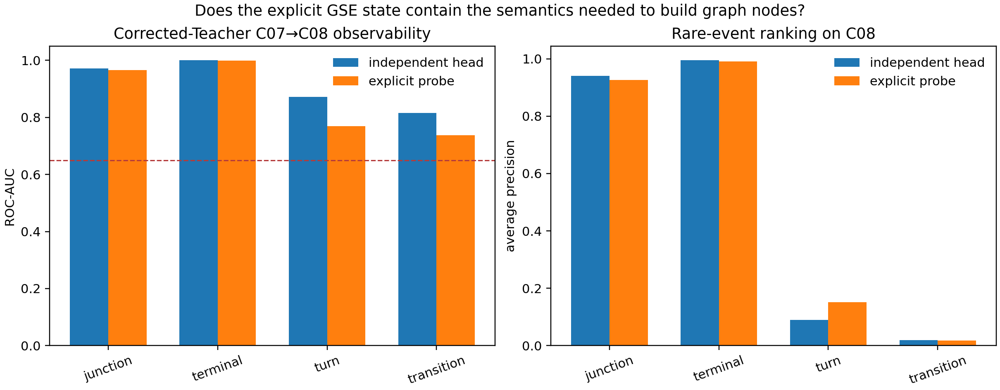

1. 先用一分钟讲清楚目前做到哪里
地下数据系统
旧学习方法
新主方法
现在不能说：还不能声称 GSE-Graph 已经学会可靠建图，也没有开始最终单/多机器人闭环。当前缺口是新组合器的正式训练、严格未见拓扑验证与在线图实验。
2. 论文到底想解决什么，与 Cano 有什么区别
| 方法 | 感知输出 | 图节点怎样产生 | 论文中的身份 |
|---|---|---|---|
| Cano-like 基线 | 隧道/出口方向 | 出口数量和固定距离规则 | 必须比较的已有思路 |
| 我们早期的规则因果图 | 出口方向 + 当前帧规则 | 手工规则触发节点 | “没有学习几何语义”的消融 |
| GSE-Graph | 出口布局、宽度、净空、坡度、曲率、跨帧变化和不确定性 | 显式几何证据组合成结构事件，事件直接触发/拒绝节点 | 论文主方法 |
LiDAR
与跨帧关系
及变化
与拒绝判断
建立边
指导探索
创新点不在“把拓扑图接到 M‑TARE”，也不在“多输出几个标签”，而在于建立可验证的因果链：几何语义发生变化 → 网络提交结构事件 → 在线图产生或关联节点。如果节点仍由隐藏特征直接分类，方法就会退化成普通出口识别加规则建图，因此我们把这条旁路明确禁止。
3. 地下地图是怎么生成的：不是一张图反复截帧
我们复用 Cano 程序化地下生成器，先生成抽象真实拓扑网络（TNG），再把每条图边变成三维样条中心线，最后沿中心线生成有宽度、粗糙度和高度变化的洞壁三角网格。固定十类结构，每类 C01--C10 十个独立实例，共 100 个世界；按世界身份划分，避免同一隧道的相邻帧泄漏到不同集合。



从一张地图变成训练数据
- 每条物理隧道保留正向和反向两次真实穿越；
- 沿中心线每 1 m 放一个机器人位姿；
- 当前帧加前 4 帧组成 5 帧因果序列，不允许看未来；
- 每帧向三维网格发射 16×720=11,520 条射线，得到 360° 距离图；
- 世界、中心线和网格只负责出标准答案；学生模型输入只有距离值和有效标记。

4. Teacher 是什么：程序化地图自动生成的标准答案
| 地图真值 | 怎样生成标签 | 得到的监督 |
|---|---|---|
| TNG 节点和相邻边 | 检查节点连接数，并把相邻隧道投影到机器人坐标系 | 路口、终点、出口方向、出口物理身份 |
| 样条中心线 | 沿真实弧长前后插值，计算切线和切线变化 | 局部轴线、坡度、曲率、真实行程 |
| 洞壁三角网格 | 向左右、上下及出口方向做射线碰撞和遮挡检查 | 宽度、净空、可见出口 |
| 正/反向穿越记录 | 同一物理事件从两个方向核对，并只用过去帧确认 | 因果事件、跨帧出口匹配、物理 identity |
# 可读化后的真实标注逻辑
if near_node and node.degree >= 3: event = "路口"
elif near_node and node.degree == 1: event = "终点"
elif persistent_width_or_height_change: event = "几何变化"
elif local_heading_change >= 15_deg: event = "转弯"
else: event = "普通走廊"
width = ray_distance(left_wall) + ray_distance(right_wall)
height = ray_distance(floor) + ray_distance(ceiling)
slope = asin(local_axis.z)
curvature = angle(tangent_before, tangent_after) / path_length开发世界
有向穿越
五帧观测
独立结构身份
事件分布
关联监督对
旧 Teacher 的问题是：把变化点前后过宽区域都贴成变化，有些早期帧只有看到未来才能确认，且一个真实事件附近连续帧会虚增样本。修正版只保留因果确认，延迟确认后回投到已经走过的位置，并以物理 identity 评价。最终标签为普通走廊 150,964、路口 26,608、终点 7,525、转弯 1,998、几何变化 1,031；后两类稀少，这也是当前方法最难的部分。

5. 第一阶段：出口识别能跑通，但不能作为论文创新
最早先做了最小闭环：LiDAR 距离图经过圆周卷积网络或几何规则，输出出口方向与数量，再按固定规则生成在线图。该原型在一个开发世界上得到出口 F1=0.7503、图节点 F1=0.8276、真实穿越边 F1=0.94；五类固定拓扑上的非学习出口规则总体 F1=0.9143。

6. 失败实验一：自由三维事件候选为什么不行
| 假设 | 像目标检测一样输出最多 16 个自由候选，候选包含事件类型和三维位置，可以同时找到多个结构事件。 |
|---|---|
| 怎么做 | 5 帧 LiDAR 编码后，用集合解码器产生候选；通过最优匹配把预测与 Teacher 的路口/终点事件配对；训练 seed 0/1/2 三次。 |
| 判断标准 | 4 m 内同类型匹配的精确率、召回率、F1 必须超过旧互斥中心事件基线 F1=0.391。 |
| 实际结果 | 三次 F1 仅 0.130 / 0.186 / 0.144；成功匹配部分位置 MAE 为 2.58 / 2.49 / 2.63 m。 |
| 结论 | 科学失败 坐标不是完全不能回归，但大多数真实事件附近没有候选，继续调置信度阈值不能补出不存在的候选。 |

7. 失败实验二：加几何锚点仍然漏掉绝大多数事件
| 为什么改 | 上一方法的自由候选没有空间参照，因此把候选位置锚定到 LiDAR 的方位和可见距离。 |
|---|---|
| 怎么做 | 候选位置=激光方位/自由距离锚点+局部残差；联合训练存在性、类型和三维位置，并做“忽略置信度、所有候选都可用”的 oracle 上界。 |
| 实际结果 | 成功匹配的位置 MAE 改善到 2.23--2.51 m，但三次 F1 进一步降为 0.086 / 0.093 / 0.069；约 29,000 个目标的 4 m 内没有任何候选。 |
| 决定性证据 | 即使假设有完美分类器，从现有候选里任选，4 m 内同类型候选召回也只有约 0.12。因此问题在候选表示，不在阈值或训练轮数。 |
| 结论 | 科学失败 停止自由 query，转为覆盖整个 360° 的结构化极坐标出口表示。 |

8. 失败实验三：稠密跨帧关系为什么会破坏方向学习
| 假设 | 路口和终点来自出口随运动的出现、持续、消失，因此预测相邻帧所有方位对之间的关系。 |
|---|---|
| 怎么做 | 对密集方位格预测 persistent/reveal/withdraw 三类关系，并与出口方向、几何任务联合训练。 |
| 观察 | reveal/withdraw 正例率约 0.013%；普通损失几乎只看到负样本，数千倍正样本加权又压倒方向任务。 |
| 结果 | C07 上找不到同时满足精度≥0.98、召回≥0.25 的关系阈值；原约 5--6° 的方向误差退化到约 83°。 |
| 结论 | 机制失败 不再在所有方位对上预测关系；每帧先提取最多 6 个真实出口条目，只在稀疏条目之间做匹配。 |
9. 当前最强旧基线 V2R5：系统完成，科学指标失败
V2R5 把每帧压缩为最多 6 个出口条目，预测方向、开口宽度、竖直轮廓、不确定性、出口数量和跨帧 transport；三个随机种子完整训练，共 36,690 次参数更新。运行没有报错，输入哈希一致，C09/C10/M‑TARE 读取为 0，因此失败不能归因于程序或数据漂移。
5 帧 LiDAR
→ 圆周编码器
→ 每帧最多 6 个出口 token（方向、宽度、竖直轮廓、不确定性）
→ 相邻帧 token transport（持续、消失、新出现）
→ 旧隐藏事件分类头 + 几何回归 + 地点关联| C08 一次零适配结果 | 要求 | 实际 | 判定 |
|---|---|---|---|
| 五类事件宏平均 F1 | 相对当前基线至少 +5 个百分点 | 0.590；几何变化 F1=0.047，转弯 F1=0.162 | 未通过 |
| 连续几何相对非学习估计器改善 | 至少 10% | 7.795%；坡度误差反而增加约 90%，宽度退化约 5% | 未通过 |
| 节点关联精度 | ≥0.98 | 0.9767 | 未通过 |
| 错误合并率 | ≤1% | 2.326% | 未通过 |
| 节点关联召回 | ≥0.25 | 0.0113 | 未通过 |
这次结果很重要：常见路口和终点分类看起来不错，但论文真正需要的几何变化、转弯、跨位置关联和安全拒绝都不够。只报告整体准确率会掩盖问题，所以 V2R5 被封存为强组件基线和后续消融，不直接拿去建主方法拓扑图。
10. 为什么没有推倒重来：显式几何中仍有可学习信号
V2R5 失败后，我们没有立刻再换大网络，而是先做零训练可观测性实验：只读取 V2R5 输出的出口方向/存在概率/开口宽度/竖直轮廓/跨帧关系，以及五帧宽高坡度曲率；明确禁止旧事件分数、隐藏特征、地点描述向量、地图真值和未来帧。诊断器只在 C07 拟合，C08 一次迁移评价。
| 事件 | C08 AUC | 说明 | 高精度下真实位置覆盖 |
|---|---|---|---|
| 路口 | 0.966 | 显式出口关系能稳定排序 | 73/77 |
| 终点 | 0.999 | 出口终止模式非常明确 | 69/69 |
| 转弯 | 0.769 | 有信号，但高精度触发不足 | 4/52 |
| 几何变化 | 0.738 | 高于随机比例，但绝对平均精度仍低 | 0/12 |

11. 新方法：双几何组合器目前实现到什么程度
| 模块 | 只允许读取 | 负责判断 | 当前状态 |
|---|---|---|---|
| 出口集合关系组合器 | 出口方位、存在概率、开口宽度、竖直轮廓、不确定性、数量、跨帧匹配/出现/消失 | 普通走廊 / 路口 / 终点 | 代码和测试完成 |
| 通道度量变化组合器 | 过去 5 帧宽度、高度、坡度、曲率及不确定性 | 普通走廊 / 转弯 / 几何变化；事件确认后回投到已走过位置 | 代码和测试完成 |
| 结构节点关联与拒绝 | 事件类型、显式几何、地点描述符和空间一致性 | 关联已有节点或建立 provisional node；不确定时拒绝强行合并 | 待组合器通过后实现 |
| 真实穿越边 | 机器人已执行轨迹 | 只有走通后才写 edge，保存长度/宽高/坡度/曲率 | 旧接口可复用，主方法未回放 |
两个网络是低容量、类型化接口：出口组合器 102,500 个参数，变化组合器 36,485 个参数。测试已经证明 token 顺序改变、batch 顺序改变、整体旋转不会破坏输出；重复运行逐元素一致，反向梯度有限。被明确禁止的输入包括旧 event logits、encoder hidden/context、place/exit descriptor、pose、world、TNG、identity 和未来帧。
接口合同
三模型显式缓存
严格测试与建图
显式缓存共约 473 MiB，8 个主要字段逐位一致；只有二进制 16 位派生概率存在最大 0.000488 的可解释舍入误差，所有离散选择完全一致。现在正在把修正版 Teacher 转换成两个组合器使用的因果训练目标；正式三种子主方法训练尚未开始。
12. 目前真正的障碍，以及接下来怎样判断能不能成
| 障碍 | 直接证据 | 为什么重要 | 下一步判据 |
|---|---|---|---|
| 稀有事件的物理位置覆盖 | 显式审计中转弯仅 4/52、几何变化 0/12 | AUC 较高不等于能安全地向图提交节点 | 同时报告逐帧 F1 和跨世界 identity 覆盖，不能只挑最好 seed |
| 连续几何还不稳定 | V2R5 总改善 7.795%＜10%，坡度与宽度退化 | 若几何量本身不改善，就不能说几何语义带来建图收益 | 新组合器不得掩盖几何回归失败；完整方法需达到预注册 10% 改善 |
| 节点关联安全性 | precision 0.9767＜0.98，误合并 2.326%＞1%，recall 0.0113 | 地下平行隧道被误合并会产生错误闭环 | precision≥0.98、false loop≤1%、recall≥0.25，否则不进入闭环 |
| 论文因果主张尚未闭环 | 旧节点决策仍有隐藏分类旁路 | 不做消融就无法证明是显式几何决定了图 | 完整方法必须稳定优于“去掉几何、单帧、距离关联、去拒绝”等消融 |
后续执行顺序
- 完成两个组合器的监督数据封存，训练 seeds 0/1/2；
- 只用 C07 选择 checkpoint、温度和拒绝阈值，C08 一次零适配评价；
- 若事件、几何、关联安全门全部通过，才打开严格未见拓扑和在线图；
- 做完整 GSE-Graph 与 Cano-like、非学习几何图、规则图、GT-TNG oracle 的离线比较；
- 最后进入 M‑TARE 单机器人和 2/3/4 机器人闭环，报告覆盖时间、冗余、距离和通信量。